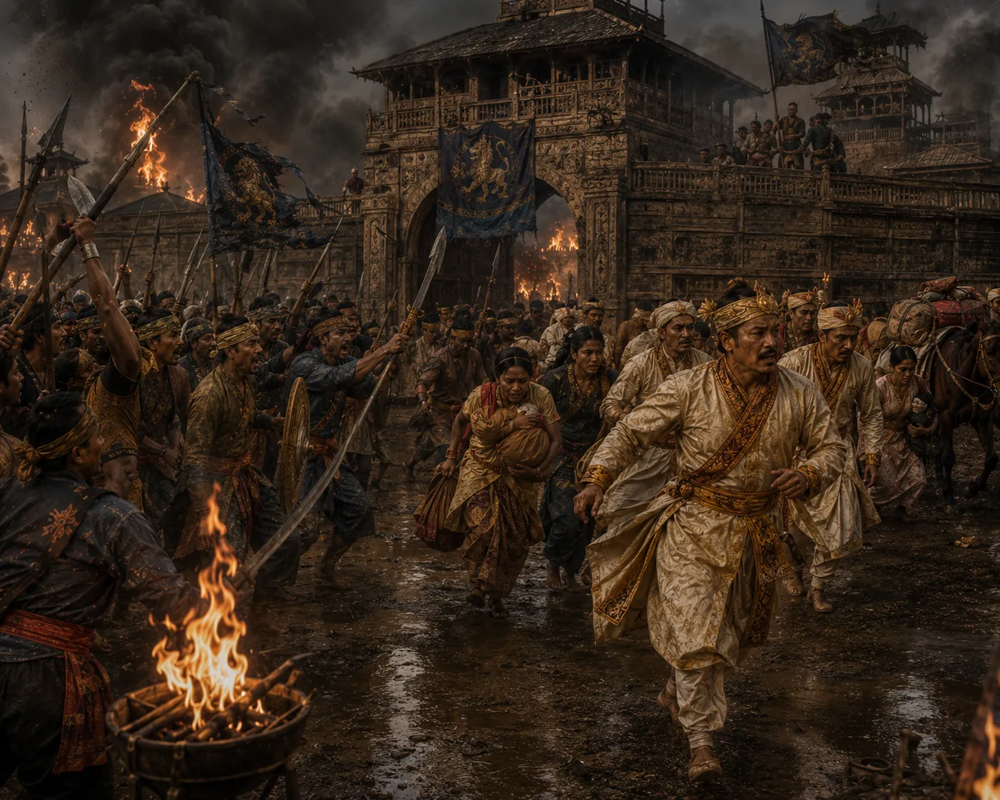

Second Moamoria Rebellion: Fall and Burning of Rangpur
1786–1788 · The Moamoria risings

Rebels rise again with devastating ferocity, routing royal armies, storming and burning royal buildings of Rangpur.
Sources have not yet been catalogued for this record.
People: Gaurinath Singha (Suhitpangphaa), Purnananda Burhagohain
Open this scene in the interactive archive · Follow this event on MAP